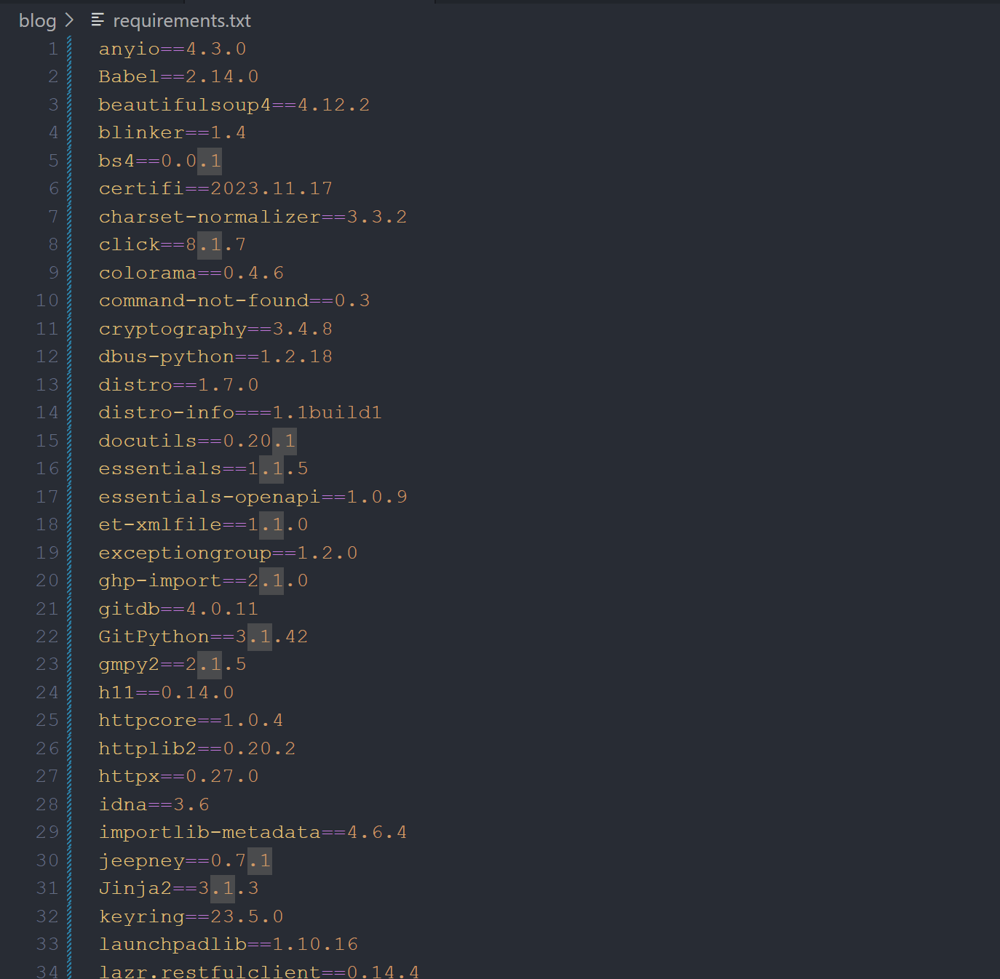

Why we need requirements
A fall into the pit, a gain in the wit. 吃一堑，长一智
使用 mkdocs 建立笔记本时遇到的一个问题：
将代码 push 进 GitHub 时，运行 workflow 时出现错误： ERROR - Config value 'plugins': The "xxx" plugin is not installed ，也就是我们插件没能够安装，但是我们在配置环境的时候已经安装好这些插件了，为什么说没有？
[!environment]
- WSL(ubuntu 22.04，请对基本 linux 命令有了解 )
- VScode ( 需要在 wsl 有安装，在 wsl 中使用命令
code file_path打开你想用 vscode 打开的文件夹 )- github( 请对 repository/branch/workflow 有基本了解 )
- git( 对 git 与 github 的关系应有一定了解 )
[!pre knowledge]
- Markdown 是什么？
- HTML 是什么？
- 什么是
pip？
ERROR - Config value 'plugins': The "xxx" plugin is not installed
{kind=link}
push 到 github 后发现找不到插件plugins
其实是缺少一个 requirements.txt，我们可以在这里看见对于这个文件的作用介绍。
简单来说，我们可以通过执行
来获取当前所使用的 python 依赖，写入到 requirements.txt 中去注意，如果你想我第一次一样执行后出现这种情况
 说明你把当前环境依赖全都搞进来了，这是我们建站所不需要的
{kind=link}
因此，我们选择开辟虚拟环境来屏蔽不必要的依赖：
这也是为什么官方文档在开头就说明要开启虚拟环境，否则，你现在开，你会发现是空的，那你需要啥 requirements.txt 也不知道了万一你真碰到这个问题才发现怎么办？重来（）
下面这个命令可以列出你所安装的插件的依赖项，基本可以拷贝过去就够用了
或者找个你参考的人的仓库去拷贝一下 requirements.txt 呗，还真重开啊…… 什么报错自己加什么，也是可以的
还是不行？别急，少了一句（我就漏了一次呜）
可别急着拷贝去命令行执行，错误的；我们需要明白为什么要 requirements.txt
.txt 文件我们很熟悉，存储字符串的，然后呢？没有了。它在建立网页什么的过程中只是提供一些字符串，那上面的语句什么意思？
把 requirements.txt 中的语句一个一个放到 pip install 后面执行
那为啥我让你别急着去 wsl 执行？先想想你的 requirements.txt 怎么来的？ 就是获取了你当前环境有的依赖嘛，本地已经有了。那我们应该怎么做？
来看看我们建立 ci.yml 干了什么
{kind=link}
不难发现，workflow 其实有运行 pip install mkdocs-material ，干什么？安装依赖
那为什么我们需要的没安装？你也妹写啊
通俗来说（其实是我懒于核实
现在明白了，我们提供 requirements.txt 告诉 workflow 我们需要什么插件，所以，加上图中那句话即可 🆗